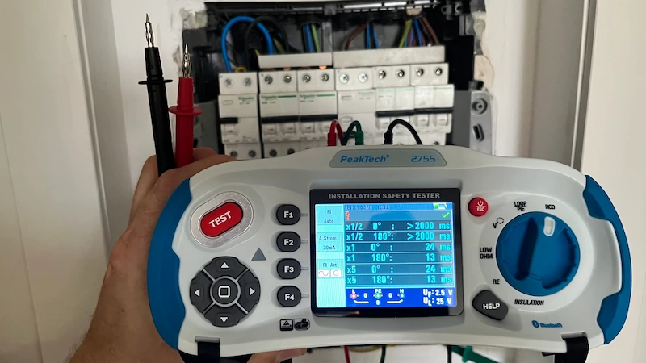

Почему выбивает УЗО: причины и диагностика
Устройство Защитного Отключения (дифференциальный автомат) — это важный элемент защиты жизни и здоровья в любом жилом и коммерческом помещении. Разберемся, как устроено УЗО, почему выбивает и как найти причину сработки.

Зачем нужно УЗО и как оно работает
УЗО (в Испании известное как interruptor diferencial) постоянно сравнивает электрический ток, входящий по фазе, с током, исходящим по нейтрали. В случае возникновения разницы токов выше допустимого предела в 30 mA (утечка тока на землю, человека, водопровод), прибор мгновенно обесточивает сеть. УЗО защищает человека от поражения электрическим током, а дом — от возгорания проводки при повреждении изоляции. Важно помнить: срабатывание УЗО означает, что защита обнаружила утечку и предотвратила аварию.
Основные причины срабатывания УЗО
- Утечка тока в бытовой технике: пробой напряжения на металлический корпус стиральной или посудомоечной машины, духовки, кондиционера или бойлера.
- Попадание влаги в электрику: затопление розеток водой, высокая влажность в ванной комнате или проникновение воды в распределительные коробки.
- Повреждение изоляции кабелей: старая электропроводка с плохой изоляцией, повреждение проводов при сверлении стен.
- Неисправность самого УЗО: выход из строя защитной автоматики в электрическом щитке.
Пошаговая инструкция: как найти неисправность самостоятельно
1. Отключите всё из розеток: Физически выньте вилки всех бытовых приборов в зоне сработавшего дифференциального автомата. Просто выключить их кнопками на корпусе недостаточно, так как утечка может происходить по питающему кабелю.
2. Включите УЗО: Поднимите рычажок вверх. Если он мгновенно падает обратно при отключенных приборах — проблема в проводке или самом УЗО. Если включился и не выбивает — переходите к следующему шагу.
3. Поочередно включайте приборы: Начните включать вилки в розетки по одной. Прибор, при подключении которого УЗО снова сработает, и является причиной утечки тока. Из опыта, чаще всего виновниками оказываются бойлеры, ТЭНы которых покрылись накипью.
Нужна профессиональная помощь в Валенсии и регионе?
Если самостоятельные тесты не помогли, свяжитесь со специалистами AmperioR. Мы выполним профессиональную диагностику и ремонт с выездом на объект за 30–40 минут.
Написать в WhatsApp Позвонить: +34 624 63 80 89ОПЫТ ПОКАЗЫВАЕТ: хотя испанский регламент низкого напряжения (REBT) устанавливает достаточность установки одного дифференциального автомата (УЗО) для 5 цепей электропроводки, этого как правило недостаточно для полноценного и спокойного функционирования жилого или коммерческого объекта. При модернизации щита мы оформляем официальный электрический бюллетень (Boletín).
Часто задаваемые вопросы (FAQ)
Не давите на рычаг силой. Отключите все обычные автоматы рядом с УЗО, поднимите рычаг УЗО, а затем включайте автоматы по одному. На каком автомате УЗО снова выбьет — там и проблема. Если УЗО не поднимается даже при всех выключенных автоматах — вызывайте электрика.
Основные причины: скачки напряжения в сети, повышенная влажность (намокание уличных розеток или коробок), либо скрытая утечка в приборах постоянной работы — бойлере или холодильнике.
На аварийные вызовы по Валенсии и региону выезжаем за 30–40 минут. Специалист с помощью измерительного прибора за 15–20 минут находит точное место утечки тока и называет фиксированную цену ремонта до начала работ.